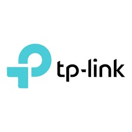
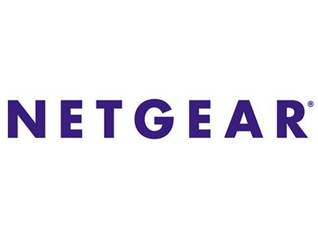
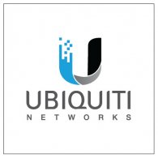

About CCL
Our company was established in August 2022 and is called CCL Company. It
is an online company.
CCL Company is named after three founders
which are Charles Chan , Calvin Chin and Ginna Lee.
Now we have 18 employees and have an office to store our products and
process orders.
Our products are from our partners, which are Tp-link, Ubiquiti, and
Netgear.
With the progress and changes of the times, there are more and more
technological gadgets, and a stable network is required.
Therefore, our company will provide the newest and best products to the
customers.
We provide reliable and affordable networking devices such as
routers, modems, hubs, gateways, bridges, range extenders, switches, and
access points,
for Malaysians to have a better network experience.
Our products are cheaper than those of other countries.
If you buy products from our company, you can not only avoid the high
shipping costs but also get the products you purchased faster.
This not only allows businessmen to have excess funds to do business,
but also saves some living expenses for families.
| Founder's Name | Occupation |
|---|---|
| Charles Chan |
|
| Calvin Chin |
|
| Ginna Lee |
|
If you want to collab with us, you can contact us
ccl@gmail.com
About Partner

Founded in 1996, TP-Link is a global provider of reliable networking
devices and accessories,
involved in all aspects of everyday
life.
The company is ranked by analyst firm IDC as the No. 1
provider of Wi-Fi devices for a consecutive 11 years*,
supplying
distribution to more than 170 countries and serving billions of people
worldwide.
With a proven heritage of stability, performance, and
value,
TP-Link has curated a portfolio of products that meet the
networking needs of all individuals.
Now, as the connected
lifestyle continues to evolve, the company is expanding today to exceed
the demands of tomorrow.
TP-Link provides us with routers,
switches, hubs and range extenders.
See More
Intoduction TP-Link:

Since 1996, NETGEAR has been the innovative leader in connecting the
world to the internet
with advanced networking technologies for
homes, businesses, and service providers around the world.
As
staying connected has become more important than ever, NETGEAR delivers
award-winning
network solutions for remote work,distance learning,
UHD streaming, online game play and more.
By enabling people to
collaborate and connect to a world of information and entertainment,
NETGEAR
is dedicated to providing a range of connected solutions from
easy-to-use high-performance
Orbi Mesh WiFi systems, the Nighthawk
portfolio of WiFi routers, cable modems and mobile wireless,
cloud-based subscription services for enhanced control and security, to
smart networking products
and video over Ethernet for Pro AV
applications.
NETGEAR provides us with modems and access points.
See More
Intoduction about NETGEAR:

Ubiquiti, Inc. currently focuses on 3 main technologies: high-capacity
distributed Internet access,
unified information technology, and
next-gen consumer electronics for home and personal use.
The
majority of the company's resources consist of entrepreneurial and
decentralized R&D teams.
Ubiquiti does not employ a traditional
direct sales force, but instead drives brand awareness largely
through
the company's user community where customers can interface directly with
R&D, marketing, and support.
With over 70 million devices shipped
in over 200 countries and territories in the world,
Ubiquiti aims
to connect everyone to everything, everywhere.
Ubiquiti was founded
by former Apple engineer Robert Pera in 2005.
Ubiquiti provides us
with gateways and bridges.
See More
Intoduction about Ubiquiti: